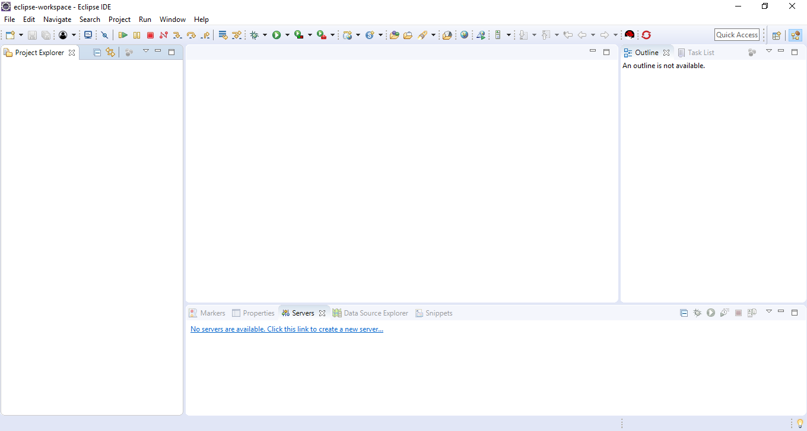
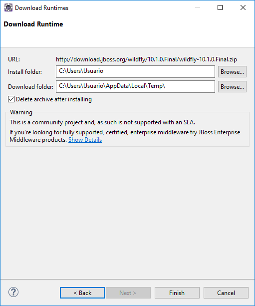
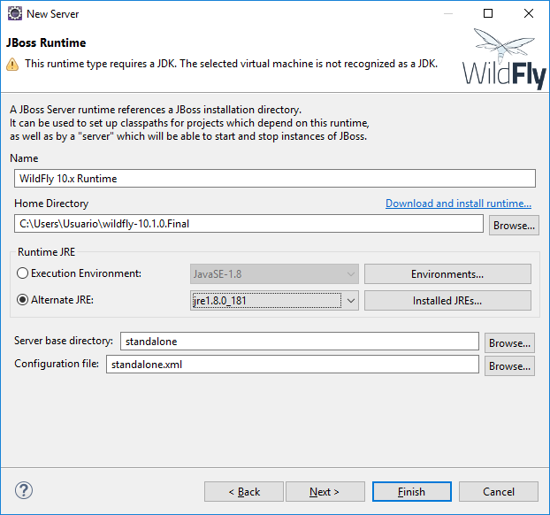
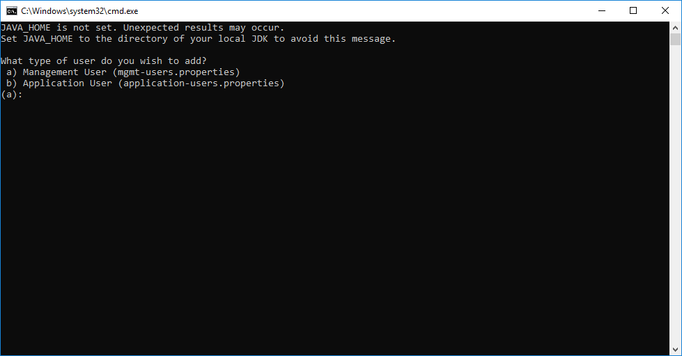
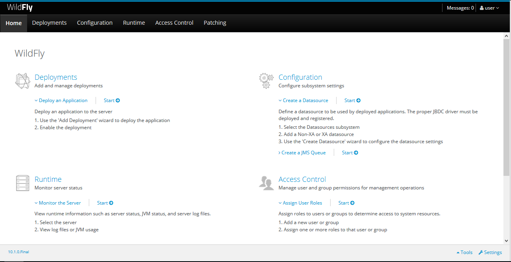
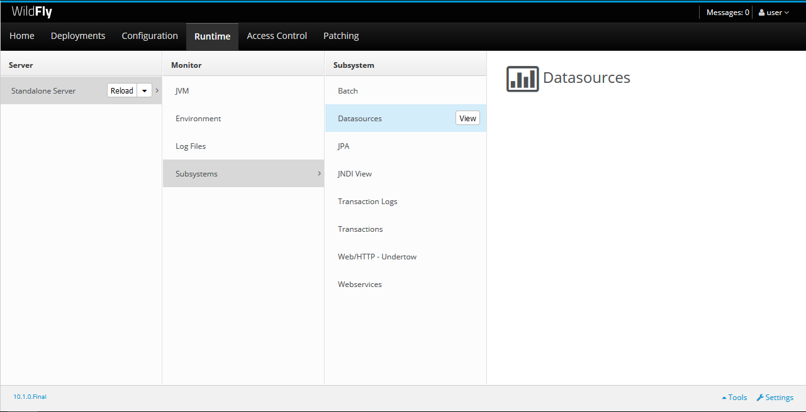
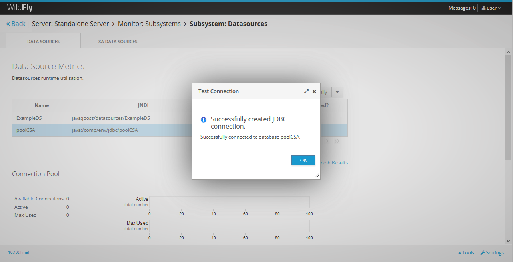

-
Ya teniendo JBoss Tools instalado, procederemos a instalar un servidor de Wildfly, en este caso utilizamos la versión 10.x final. Seleccionamos la pestaña de Servers, si no se encuentra en la view de Eclipse podemos buscarla en Window → Show View → Servers.
 -
Seleccionamos la opción “No servers are available. Click this link to create a new server.” y seleccionamos el servidor Wildfly 10.x.


-
Ya que aún no tenemos un runtime para el servidor, tendremos que descargarlo. Seleccionamos “Download and install runtime…”


 -
Finalizamos y saldrá algo así.

-
Ahora tenemos que configurar nuestro Wildfly para las aplicaciones web. Vamos a la carpeta en donde se instaló y buscamos la carpeta bin.

-
Entramos y pegamos los siguientes archivos que están en la carpeta “Conexión a base de datos”:
admintx_csa.properties, admintx_csa_aplicacion.properties, log4j_csa.properties y log4j.properties
-
Ahora tendremos que copiar la carpeta modules de la carpeta “Conexión a base de datos” y pegarla en la raíz de wildfly, para verificar que se metieron los archivos hay que llegar hasta esta ruta: modules/system/layers/base/com/oracle/main y encontrar los siguientes archivos: module.xml y ojdbc7.jar.

-
Tenemos que configurar la conexión de Wildfly a la base de datos, para eso buscaremos en la carpeta raíz de wildfly-10.1.0.Final/standalone/configuration/standalone.xml aquí tenemos que reemplazar por el que viene en “Conexión a base de datos”. Este contiene un pool para la conexión, el cual se verá reflejado en los siguientes pasos.
Ahora tendremos que configurar el puerto con el que vamos a entrar a la aplicación web, esto se hace debido a que el puerto que utiliza el XE de Oracle SQL Developer puede causar conflicto con el 8080 y no podremos entrar a la aplicación. Esto se hace en la siguiente imagen.
-
Hecho esto, guardamos con ctrl+s y daremos click derecho al servidor, le damos Start y empezará a levantar el servidor en localhost.
Para poder ingresar a localhost:9990 que es la dirección de administración de Wildfly, se necesita crear un usuario, para esto vamos a la carpeta de Wildfly y buscamos el siguiente archivo:
-
Damos doble click y aparecerá una ventana de CMD así:
 -
Seleccionamos la opción a, damos enter y nos va a preguntar el nombre de usuario, podemos poner cualquiera y volvemos a dar enter. Nos pedirá una contraseña, la contraseña puede ser cualquiera, pero para fácil acceso utilizamos 1234, nos dará un aviso de que debe de ser de 8 caracteres, pero podemos seguir poniendo yes en la consola, nos preguntará en qué grupo queremos añadir al usuario, solamente presionamos enter y seguimos, le damos yes de nuevo y añadirá al usuario en el grupo antes dicho, en la última ponemos no y terminamos.

-
Reiniciamos el servidor. Ahora toca hacer un test de conexión con la base datos. Para esto iremos a nuestro navegador e iremos a la siguiente dirección: localhost:9990, nos pedirá el usuario y contraseña para entrar.
 -
Seleccionamos la pestaña “Runtime”. Y vamos a donde sale la imagen y seleccionamos ”View”.
 -
Seleccionamos poolCSA y damos a “Test Connection”.

-
El servidor ya quedó listo con la conexión para la base de datos.
